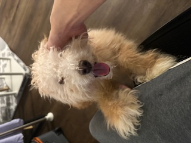

About Me
Hi my name is Raymond Zheng, i am 29 years old and live between New York city and Philadelphia PA
I was born in bronx new York and moved to china for 5 years at the age of 2 months. I have many strange
interest and hobbies, but my biggest interest has always been animals and history. I started my own business
at the age of 21. I owned a liquor store for 2 years before risking it all to move to Philadelphia.
As at the time my dream was to build a family. However things have since changed and now im on a different path all together.
I love to travel and have been to cities and states including Cali, Florida and Atlanta. I have also traveled out of country
a few times. I have been to singapore, vietnam, and china.
Love for animals
I have always loved animals even as a child. Due to health concerns in our family
we were never allowed any pets at all. When i moved out my first purchase was a little white drawf bunny.
Whom grew so big and is now my mother's "dog". I also fostered an elderly cat as she was going to be put down. I was able to
bring out her playful side and she was adopted by a sweet elderly lady. Currently i own a beautiful
poodle mix named Lulu. Shes a big brat but i love her and shes my joy and happiness in life.


Personal Interest
One of my interest is history. When it comes to history i am interested in all kinds. From fiction to nonfiction.
My personal favorite nonfiction would be The Legend of The Three Kingoms. A war novel that might be true or untrue depending
on who you are asking. I love it due to its vast knowledge of the history of china during that time.
I also love outdoor sports as long as it isnt the typical 3 of soccer, basketball and baseball lol. Dont get me wrong
i am a die hard New York Knicks, Mets , and Jets fan but playing the sport is way more different.
My main interest in sports as for playing myself would be going jet skiing which i go
every summer. I also love archery (havent gone in a while tho). But more than anything else i love to go bowling and play real time
strategy games such as Starcraft and Age of Empires. I grew up on those 2 games and diablo.
Future Goals
This might get a little personal as my Future Goals come from past mistakes.
As i stated before i moved down to Philadelphia with the hopes and dreams to start a family.
Sadly Covid hit and put a big dent in my plans. With a huge road bump and lack of family support i hit a point in my life where i felt very
worthless. And Frankly till this day never fully recovered. I still doubt myself on a daily basis and never truly being able to overcome it
regardless of how far i go or how high i push myself to climb. My personal goal since i started this program was to do somethinng that can make me feel proud.
I want to wake up every morning and be proud to start the day , not sitting there wondering why i am feeling do down.
My future goal is to have a job that makes me feel proud. And as corny as it sounds raise a nice and beautiful family. My little niece
got me through my hardest times in life and till this day having a daughter like her has been not only a goal but a beautiful dream!